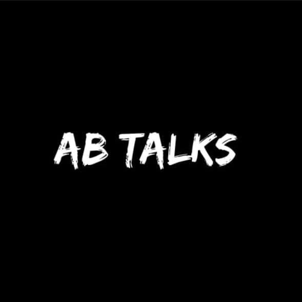

Learning Journey → Capstone → Production Release
Built an understanding of generative AI, large language models, effective prompting, and how AI can support software development and problem solving.
Learned to write structured prompts, iterate on outputs, and use AI as a collaborative development partner rather than a simple code generator.
Moved beyond writing code by planning features, improving user experience, breaking work into milestones, and validating ideas through iteration.
Applied React, Spring Boot, PostgreSQL, JWT authentication, REST APIs, cloud deployment, Git, and GitHub to build an end-to-end production application.
Integrated Google Gemini API to generate interview questions, evaluate answers, and provide structured feedback for users.
Completed documentation, deployment, GitHub release, README improvements, portfolio preparation, and officially launched PrepAI Version v1.0.0.
PrepAI v1.0.0
AI-Powered Mock Interview Platform
Built and deployed by
Divya Chauhan
as the capstone project of the
AB Talks 60-Day Claude AI Challenge.
From learning AI concepts
to shipping a complete production-ready application,
this journey demonstrates continuous growth in
software engineering,
product development,
cloud deployment,
AI-assisted development,
and real-world software delivery.